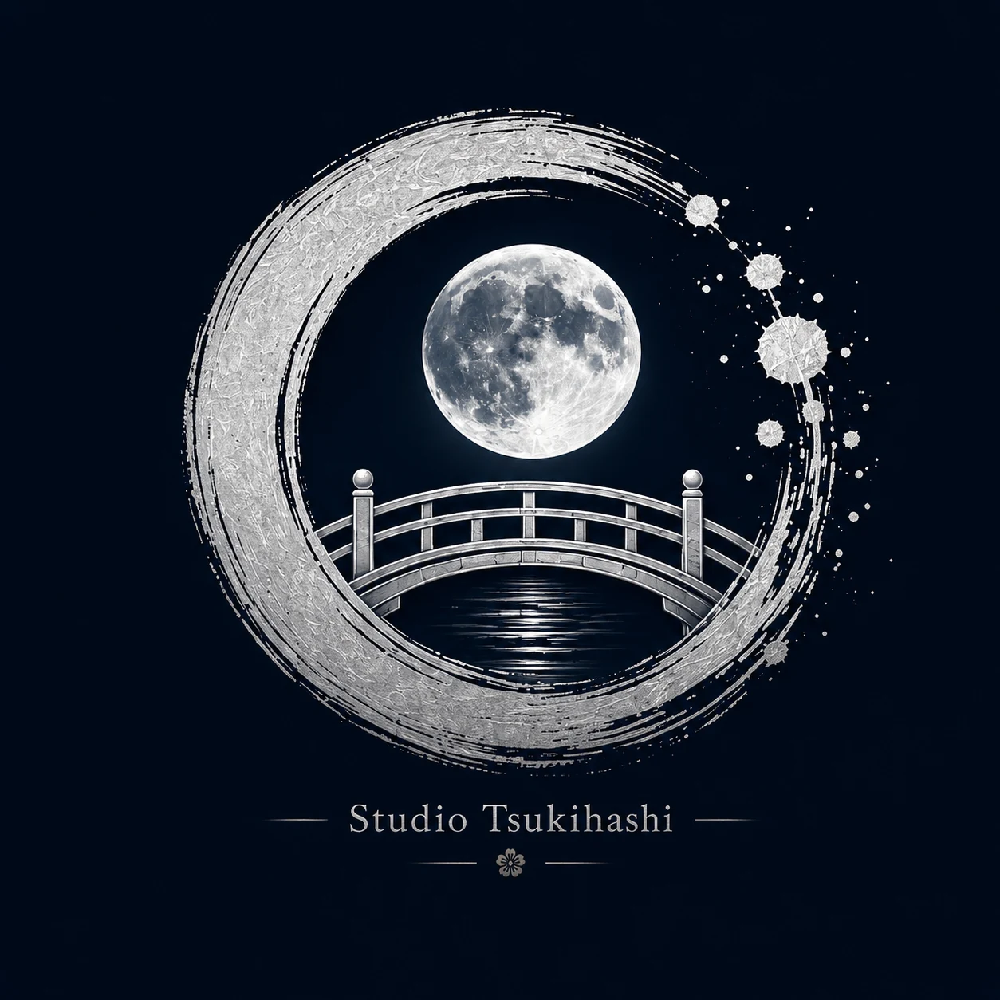
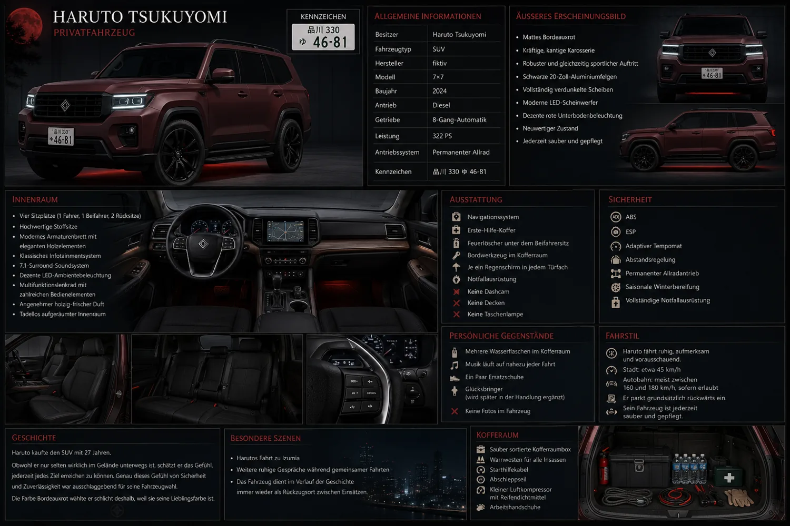
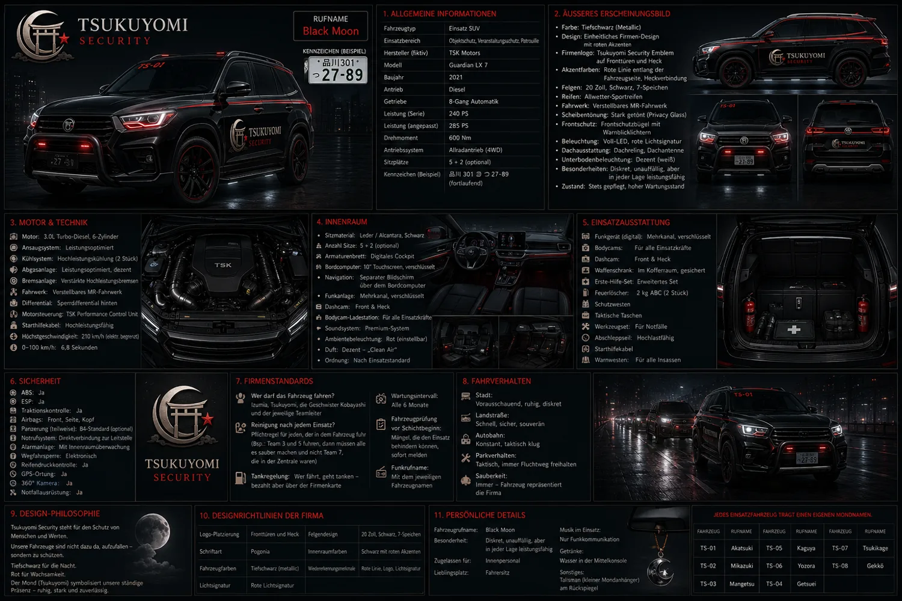
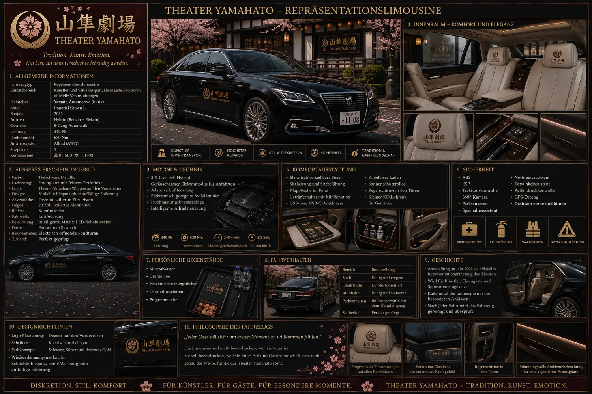
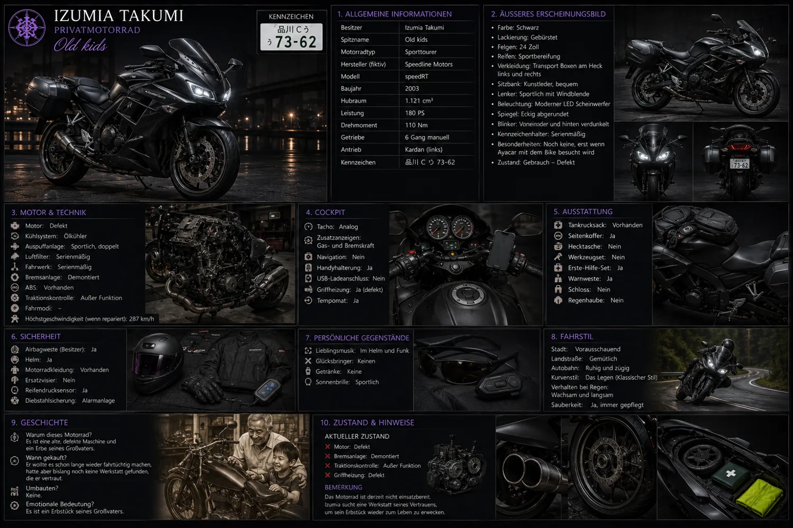
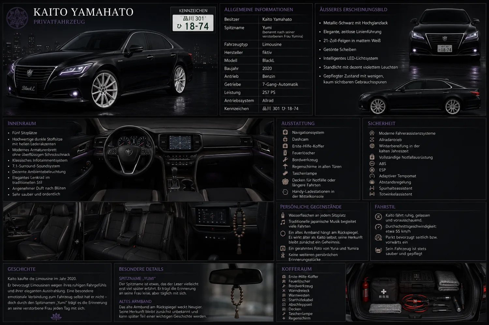

Theater Yamahato
Ein traditionsreiches Haus, in dem Geschichte, Musik und große Gefühle lebendig werden.

Studio TsukihashiStudio Tsukihashi präsentiert
Musician & Protector
Eine Geschichte über Musik, Schutz und die Menschen, die füreinander Licht werden.
Die Welt betretenZwischen Bühne und Verantwortung
Zwischen den Straßen Tokios, einem traditionsreichen Theater und einem Sicherheitsunternehmen begegnen sich Menschen, deren Leben unterschiedlicher kaum sein könnten.
Manche schützen. Manche musizieren. Manche versuchen einfach nur weiterzugehen.
„Die Welt erzählt sich selbst.“
Schauplätze und Atmosphäre
Ein traditionsreiches Haus, in dem Geschichte, Musik und große Gefühle lebendig werden.
Ein Ort der Verantwortung, der Loyalität und der Menschen, die andere beschützen.
Eine moderne Metropole, in der gerade die kleinen Begegnungen große Spuren hinterlassen.
Kein bloßes Thema, sondern ein emotionales Band zwischen Figuren, Erinnerungen und Hoffnung.
Menschen im Mittelpunkt

月読 春人
Teamleiter von Tsukuyomi-Security. Ruhig, zuverlässig und stark durch seine Verantwortung geprägt. Hinter der kontrollierten Außenwirkung trägt er eine Vergangenheit, die ihn bis heute begleitet.
山隼 結菜
Eine junge Musikerin mit feinem Gespür für Menschen und Klänge. Schüchtern gegenüber Fremden, ehrlich in ihren Gefühlen und entschlossen, ihren eigenen Weg zu finden.
Offizielles Bild folgt nach Abschluss des Charakterdesigns.Fahrzeuge und Atmosphäre




Vom Entwurf zur Veröffentlichung
Welt, Figurenkern und Tonalität stehen.
Die zentralen Regeln und Charakterkerne sind festgelegt.
„Musician & Protector“ ist ausgearbeitet.
Die visuelle Produktion wird vorbereitet.
Folgt nach Abschluss der visuellen Vorproduktion.
Geplant für eine deutsche und japanische Ausgabe.
Die Reise beginnt